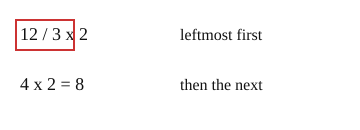

Part of Order of Operations. Answer in the chat (1: ..., g: c), add sure or guess after any answer, and say done when finished.
Last time: what is 12 / 3 x 2? You said c) 4. It is b) 8.

When two steps have the same rank, the rule from lesson 02 cannot pick one, so there must be a tie-break. Multiply and divide share a rank, and so do add and subtract: work each pair in one pass from left to right (notes 3, 4).
Q1. What is 20 - 8 + 2?
14 (sure)
Right: from the left, 20 - 8 = 12, then 12 + 2 = 14 (notes 4).
Q2. Jo says 24 / 4 x 2 = 3, since multiply comes before divide. What is wrong?
nothing, 4*2 comes first since multiply goes before divide, so it is 24/8 = 3 (sure)
You wrote
4*2 comes first since multiply goes before divide. Try a case you can check by sense, 8 / 2 x 2, which is half of 8, doubled:
- from the left: 8 / 2 = 4, then 4 x 2 = 8
- multiply first: 2 x 2 = 4, then 8 / 4 = 2
Halving and then doubling should land back on 8. Which order does that? (notes 3)
Q3. What is 40 / 2 / 2?
40 (guess)
You wrote "40". Two divides in a row also go from the left (notes 3). Take 36 / 3 / 3: first 36 / 3 = 12, then 12 / 3 = 4. Doing 3 / 3 first would give 36 / 1 = 36, as if nothing were divided. Now try Q3 the same way.
What is 10 - (4 + 3)?
a (guess)